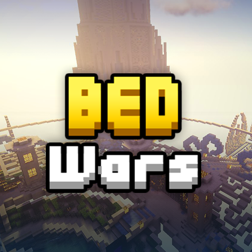

What is Bedwars
In Bed Wars, players spawn in teams of up to four players, with eight or four different teams on separate islands depending on the modes. These islands have a bed in front, and a resource generator in back. This resource generator spawns Iron and Gold, or Emeralds with the Emerald Forge Upgrade, and these resources can be used at the Item Shop to purchase items of several categories. Players spawn with a Wooden Sword and a Compass in their inventory. The Wooden Sword will always be in a player's inventory unless another sword is acquired, and will appear if the other sword is removed from the player's inventory. The Compass opens a menu for Team Communications or Player Tracking. Team Communications brings up a selection of pre-set messages that can be selected to broadcast the message to other team members, while Player Tracking tracks players of a selected team if all opposing beds are destroyed. Players can go to other team islands and break their beds to eliminate the team's method of respawning. Teams may defend the bed by placing blocks over it, with a selection of blocks available in the shop. If the team's bed is broken by a player from another team, they will no longer respawn and will be eliminated from the game upon dying. Players can visit different islands around the map, housing unique generators of a single resource. A Diamond Island is located in between two team islands and spawns Diamonds that can be used to purchase team benefits at the Upgrade Shop. Farther away from Diamond Islands is the middle island, with Emerald Generators that spawn Emeralds less often. These Emeralds can be used at the Item Shop to purchase stronger and unique items. Different events will go as time passes, including tier upgrades to Diamond and Emerald Generators, Bed Destruction, Dragon spawning, and the game ending in a draw. When all opposing beds and players are eliminated, the last team standing will win the game.
Modes
Modes There are four core modes, those being Solo, Doubles, 3v3v3v3, and 4v4v4v4. These modes follow the standard Bed Wars gameplay and have nearly identical gameplay aspects. Additionally, there is a 4v4 mode, which is a duel between two teams of four players and has 3v3v3v3/4v4v4v4 aspects for generators and prices, and a rotational Dreams mode that cycles between several different modes that change different aspects of the Bed Wars formula.
Solo/Doubles
Solo and Doubles share the same maps and gameplay. In these two modes, there are eight teams, which each have their own islands and are close to both a Diamond Generator and another team's island. Upgrades are usually cheaper in this mode, though island resource generation is slower than other modes. Maps have four Emerald Generators, as opposed to smaller amounts of generators in other modes. Diamond Generators hold up to four Diamonds, and Emerald Generators hold up to two Emeralds.3v3v3v3/4v4v4v4
3v3v3v3 and 4v4v4v4 share the same maps and gameplay. In these two modes, there are four teams, which each have their own islands and face two diagonal Diamond Generators and the middle island with Emerald Generators. Some items have varying prices, though permanent upgrades cost more than their Solo/Doubles prices. Resource generation in team islands is faster compared to Solo/Doubles, and special generators hold more maximum resources. Diamond Generators hold up to eight Diamonds, and Emerald Generators hold up to five Emeralds.4v4
4v4 is a special mode released on August 22, 2019, replacing the original 4v4 Capture mode.[3] It is a mode that uses unique maps, but shares item/upgrade prices and resource generation from 3v3v3v3 and 4v4v4v4. This mode has two teams, Red and Blue, and has them facing a middle island that holds Emerald Generators, with Diamond Generators usually seperated to the left and right of the middle island. This mode currently counts towards a player's overall statistics.4v4 Capture
4v4 Capture is a removed mode that was originally released on February 1, 2018.[4] It was a mode where players spawned in two teams, Red and Blue, with one bed at their team island. There were five designated capture points available; one at each team island, one in the middle island, and one at each small island at the sides of the middle island. Players could purchase Beds in the shop for 2 Diamonds each, and these Beds could be placed at capture points to claim the point for the respective teams. Each team started with 1,500 points and lost points each second depending on how many beds the opposing team had, and the first to 0 points would lose the game. Teams could also lose the game if they ran out of beds and all members were killed. If a team had some members dead without a bed and surviving members placed a bed, all dead members would respawn shortly after. 4v4 Capture was replaced by the 4v4 mode on August 22, 2019.Leveling system
Bed Wars includes a leveling system that shows stars in the main lobby and besides a player's name when chatting. These levels are advanced through Bed Wars Experience, which is earned by playing (earned per minute), winning, and completing quests. Additional experience multipliers can be used by purchasing the +5% Bed Wars XP perk in the Tournament Hall or playing in a team party.
Cosmetics
Cosmetics cost different amounts of Coins depending on the rarity of the cosmetic, or if it is an event-exclusive cosmetic. Common costs 5,000 Coins, Rare costs 10,000 Coins, Epic costs 25,000 Coins, and Legendary costs 100,000 Coins. These prices are tripled for event-exclusive items. Obtaining duplicate cosmetics from a Loot Chest returns an amount of Coins that is 10% of the cosmetic's value in the shop.